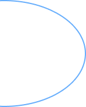

Разработка интернет-магазина с нуля за неделю
Дизайн интернет магазина, элементов микро UX, корзин, личного кабинета - от фирменного стиля до пользовательского интерфейса в сжатые сроки с командой Virtual Designers

Дизайн интернет магазина, элементов микро UX, корзин, личного кабинета - от фирменного стиля до пользовательского интерфейса в сжатые сроки с командой Virtual Designers
Дизайн портала — это оформление контента, совокупность всех графических элементов на веб-странице. Основная задача дизайна — познакомить пользователя со страницей. Продуманный дизайн создает нужное впечатление о компании.
Мобильная версия сайта удобна для пользователя, потому что сильно упрощена по сравнению с обычной версией. Мобильная версия дает наиболее приоритетную информацию, а также позволяет совершать заказ/покупку с минимумом действий. При адаптивной версии вся структура сайта автоматически подстраивается под различную ширину экрана. Для того, чтобы получить рабочий продукт не нужно писать все с нуля — достаточно лишь подправить CSS и HTML. Один URL избавляет нас от ненужных редиректов, и надобности пользователю запоминать адрес мобильной версии.
Десктопную версию сайта просматривают пользователи со стационарных компьютеров. Основная цель: посерфить, углубиться в детали, получить больше информации, сравнить, выбрать, прицениться.
Цель дизайна пользовательского интерфейса - сделать взаимодействие максимально простым и эффективным, насколько это возможно, с точки зрения достижения целей пользователя. Хороший дизайн пользовательского интерфейса облегчает выполнение поставленной задачи, не привлекая к себе лишнего внимания.
Микро-анимация может изменить восприятие продукта, пользовательское поведение и повысить конверсию. Небольшие, преимущественно функциональные анимации поддерживают пользователя: обеспечивают визуальную обратную связь и более понятно отражают происходящие изменения. Микро-анимации способны многое объяснить без слов.